Chapter 7 · Part 1 — Ready, Set, Go!
“, ! !” . “To the !”
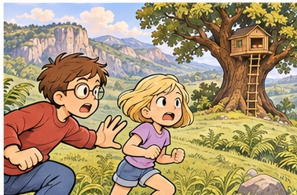
down the together. Through the tall grass, through the , past the , right to the .
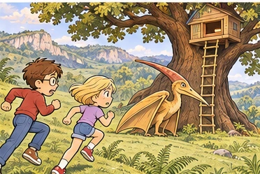
up. Seconds later tumbled into the .
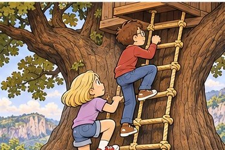
leaped to the .
“’s going away!” she , .
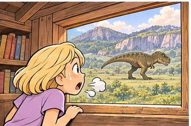
pushed his into place. through the with her.
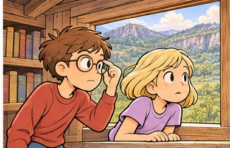
The Tyrannosaurus was wandering off.
But then the stopped around.
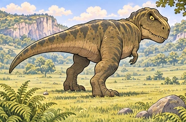
“Duck!” .
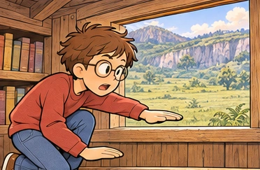
The two of them down.
After a long moment, raised their heads. out again.
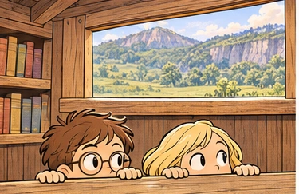
“Coast clear,” .
“Yay,” .
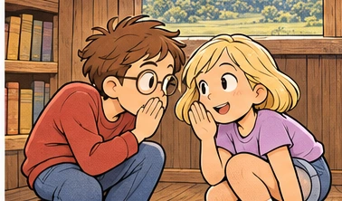
“We have to get out of here,” .
“ made a before,” .
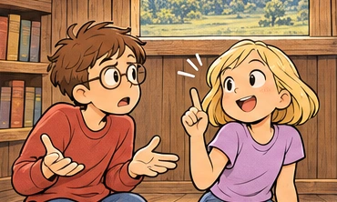
“I we could to Frog Creek,” .
Nothing happened.
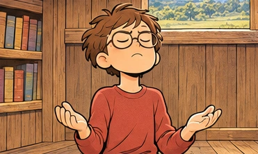
“I —”
“Wait. were looking at a in the dinosaur . ?”
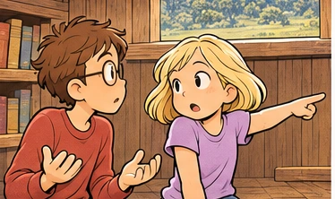
The dinosaur .
groaned. “Oh, no. I left the my pack on the . I have to .”
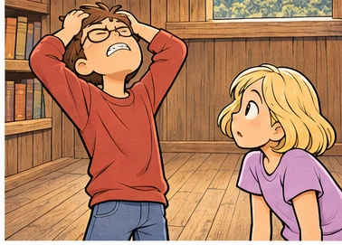
“Oh, ,” .
“I can’t,” . “The doesn’t belong to us. Plus my ’s in my pack. With all my notes.”
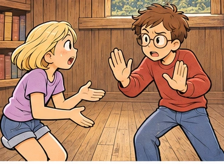
“!” .
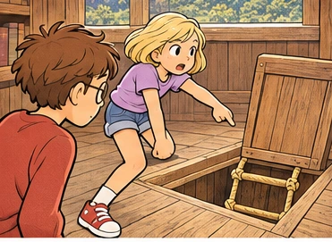
hurried down the .
leaped to the .
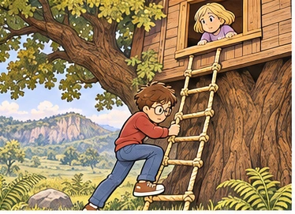
raced past the , through the , through the tall grass, up the .
down.
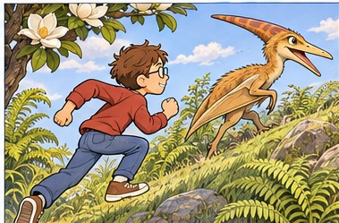
was his pack, lying on the . On top of was the dinosaur .
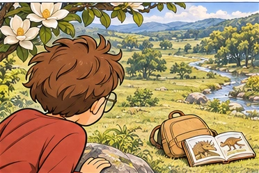
But now the below was filled with Anatosauruses. All standing guard around the .
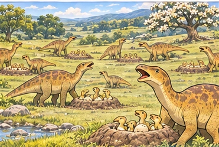
had been? Did fear of the Tyrannosaurus send them ?
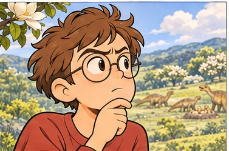
took a deep .
! Set! Go!
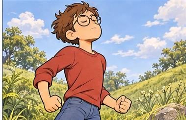
charged down the . leaped to his . scooped up. grabbed the dinosaur .
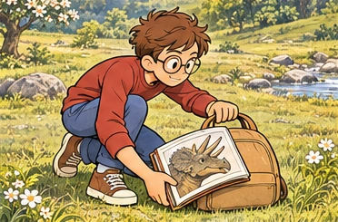
A terrible tuba sound! Another! Another! All the Anatosauruses were at him.
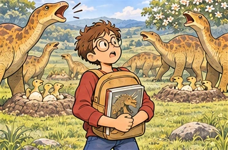
.
raced up to the hilltop.
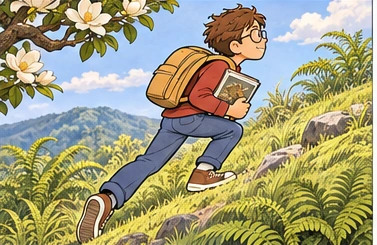
started down the .
stopped.
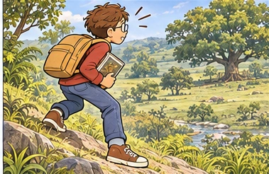
The was ! was standing between the !
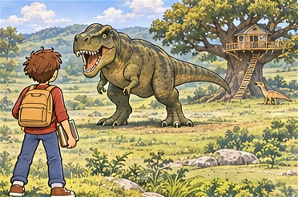